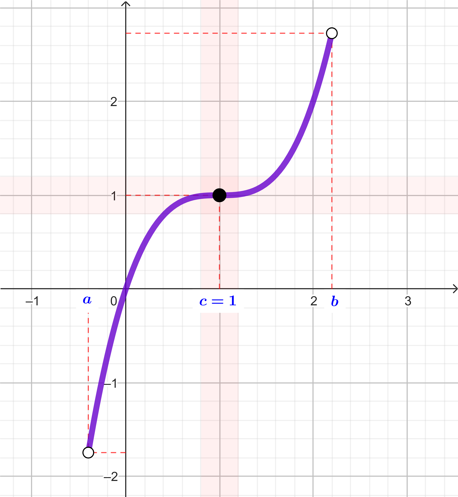
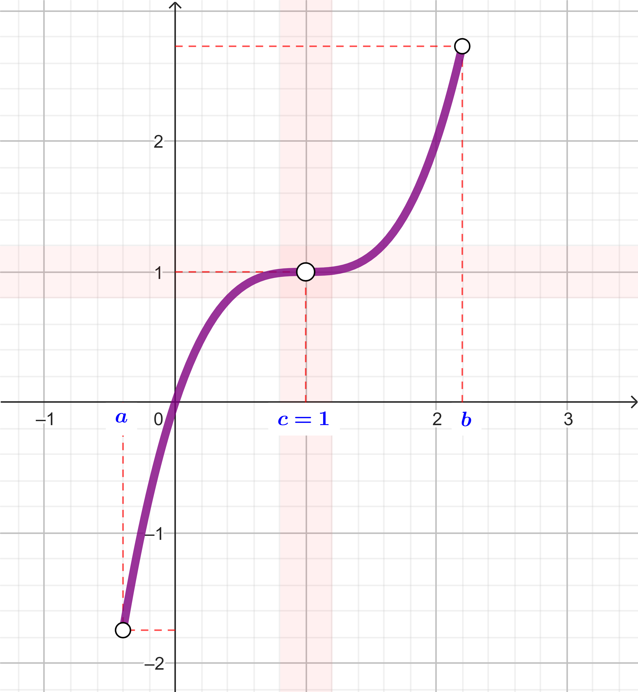
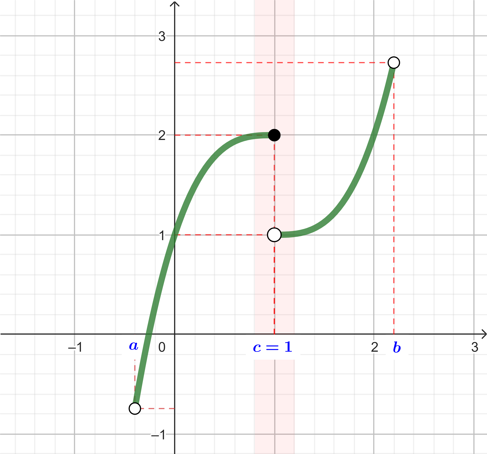
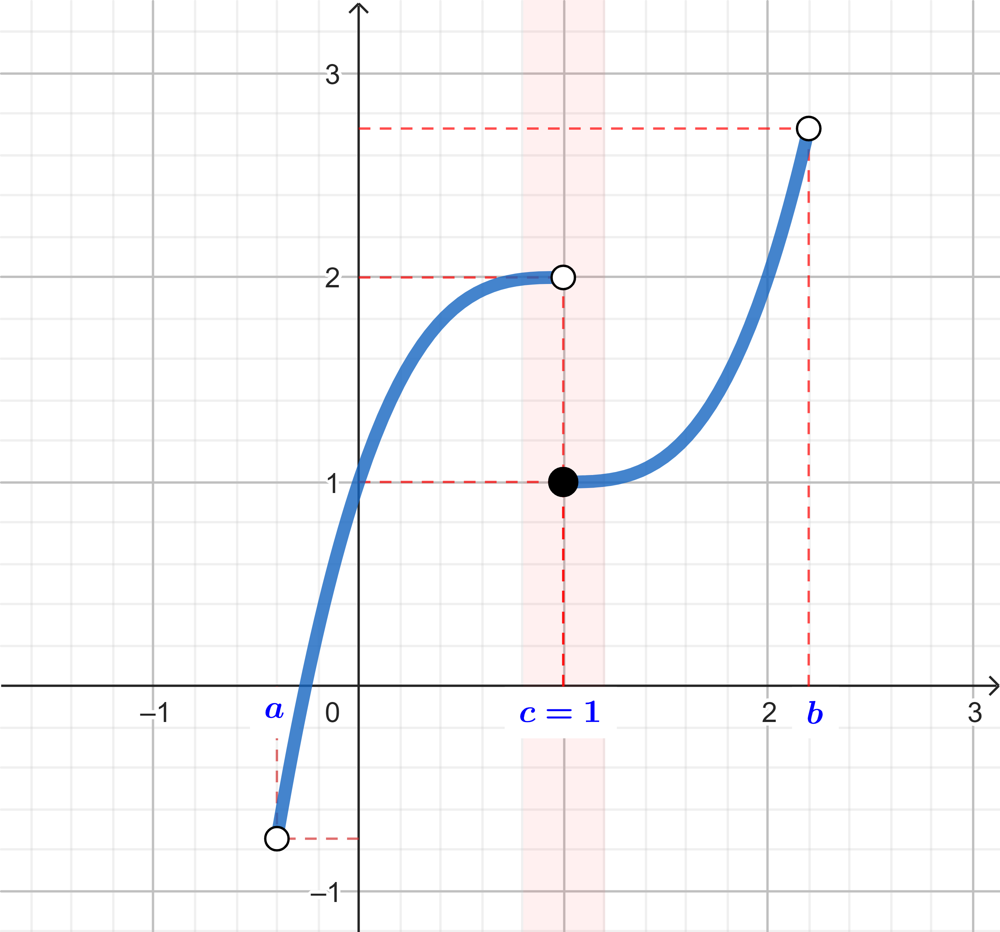
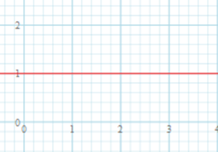
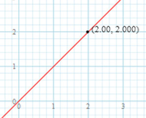
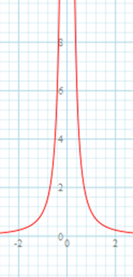
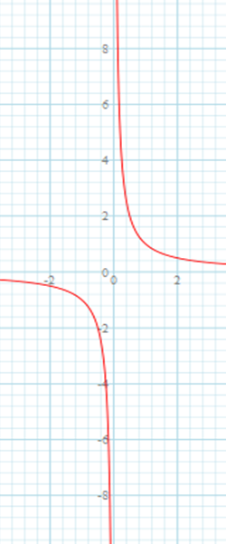

Limit
Tujuan Pembelajaran:
Memahami konsep limit dan menentukan nilai limit secara intuitif.
Misalkan \(I\) adalah interval nilai \(x\in\mathbb{R}\) dengan \(a<x<b\) dan \(c\in I\). Fungsi \(f(x)\) terdefinisi di \(I\), kecuali mungkin di \(c\) (di \(x=c\), \(f(x)\) mungkin terdefinisi, tetapi mungkin juga tidak terdefinisi).
Berikut ini diberikan empat contoh fungsi. Kita tinjau nilai fungsi \(f\) pada saat \(x\) di sekitar \(c\).

\(\scriptsize f(x)=(x-1)^3+1\)
Pada saat nilai \(x\) di sekitar \(c=1\),
nilai \(f\) di sekitar 1.

\(\scriptsize f(x)=\dfrac{x^4-4x^3+6x^2-3x}{x-1}\)
Pada saat nilai \(x\) di sekitar \(c=1\),
nilai \(f\) di sekitar 1.

\(\scriptsize f(x)=\left\{\begin{matrix} (x-1)^3+2 & ;\,x \leq 1\\ (x-1)^3+1 & ;\,x > 1 \end{matrix}\right.\)
Bagaimana nilai fungsi \(f\) ini, pada saat nilai \(x\) di sekitar \(c=1\)?

\(\scriptsize f(x)=\left\{\begin{matrix} (x-1)^3+2 & ;\,x < 1\\ (x-1)^3+1 & ;\,x \geq 1 \end{matrix}\right.\)
Bagaimana nilai fungsi \(f\) ini, pada saat nilai \(x\) di sekitar \(c=1\)?
Pengertian Limit
Pengantar Limit
Ingat fungsi \(f(x) = \dfrac{x^4-4x^3+6x^2-3x}{x-1}\) terdefinisi untuk setiap \(x \in \mathbb{R}\), kecuali untuk \(x=1\).
Yang terjadi dengan nilai \(f(x)\) di sekitar \(x=1\), kita dapat melihat bahwa nilai \(f(x)\) mendekati 1.
Demikian juga fungsi \(f(x) = \dfrac{x^3-1}{x-1}\) terdefinisi untuk setiap \(x \in \mathbb{R}\), kecuali untuk \(x=1\).
Apa yang terjadi dengan nilai \(f(x)\) di sekitar \(x=1\)?
Perhatikan tabel berikut.
| \(x\) | 0,9 | 0,99 | 0,999 | 1 | 1,001 | 1,01 | 1,1 |
| \(f(x)\) | 2,71 | 2,9701 | 2,997001 | ? | 3,003001 | 3,0301 | 3,31 |
Kita dapat melihat bahwa pada saat nilai \(x\) mendekati 1, maka nilai \(f(x)=\dfrac{x^3-1}{x-1}\) mendekati 3.
Contoh 1
Karena limit kiri \(\lim\limits_{x \to 2^{-}} 1 = 1\) dan limit kanan \(\lim\limits_{x \to 2^{+}} 1 = 1\) sama, maka:
\(\lim\limits_{x \to 2} 1 = 1\)

Karena limit kiri \(\lim\limits_{x \to 2^{-}} x = 2\) dan limit kanan \(\lim\limits_{x \to 2^{+}} x = 2\) sama, maka:
\(\lim\limits_{x \to 2} x = 2\)

Karena limit kiri \(\lim\limits_{x \to 0^{-}} x^2 = \infty\) dan limit kanan \(\lim\limits_{x \to 0^{+}} x^2 = \infty\) sama, maka:
\(\lim\limits_{x \to 0} x^2 = \infty\)

Karena limit krir \(\lim\limits_{x \to 0^{-}} \dfrac{1}{x} = -\infty\) dan limit kanan \(\lim\limits_{x \to 0^{+}} \dfrac{1}{x} = \infty\) tidak sama, maka
\(\lim\limits_{x \to 0} \dfrac{1}{x}\) tidak ada

Teorema Limit
Contoh 2
Ingat:
\(\lim\limits_{x \to c} k = k\)
Maka
\(\lim\limits_{x \to 4} 11 = 11\)
Ingat:
\(\lim\limits_{x \to c} x = c\)
Maka
\(\lim\limits_{x \to 8} x = 8\)
Ingat:
\(\lim\limits_{x \to c} k\cdot f(x) = k \times \lim\limits_{x \to c} f(x)\)
Maka
\[\begin{align*}\lim\limits_{x \to -2} 6\cdot (x^3 + 11)^2 &= 6 \times \lim\limits_{x \to a} (x^3 + 11)^2 \\ &= 6 \times ((-2)^3 + 11)^2 \\ &= 6 \times (-8 + 11)^2 \\ &= 6 \times 3^2 = 54\end{align*}\]
Ingat:
\(\lim\limits_{x \to c} \left( f(x) \pm g(x) \right) = \lim\limits_{x \to c} f(x) \pm \lim\limits_{x \to c} g(x)\)
Maka
\[\begin{align*} \lim\limits_{x \to 3} \left( 2(x-2)^5 + 3\sqrt{2x+3} \right) &= \lim\limits_{x \to 3} 2(x-2)^5 + \lim\limits_{x \to 3} 3\sqrt{2x +3} \\ &= 2(3-2)^5 + 3\sqrt{2\cdot 3 +3} \\ &= 2(1)^5 + 3\sqrt{9} \\ &= 2 + 9 = 11 \end{align*}\]
Ingat:
\(\lim\limits_{x \to c} \left( f(x) \times g(x) \right) = \lim\limits_{x \to c} f(x) \times \lim\limits_{x \to c} g(x)\)
Maka
\[\begin{align*} &\lim\limits_{x \to -1} (4x^4+3x^2-2x-1)\sqrt{\cos{(x+1)}} \\ &= \lim\limits_{x \to -1} (4x^4+3x^2-2x-1) \times \lim\limits_{x \to -1} \sqrt{\cos{(x+1)}} \\ &= \left(4(-1)^4+3(-1)^2-2(-1)-1\right) \times \sqrt{\cos{(-1+1)}} \\ &= (4+3+2-1) \times \sqrt{\cos{0}} \\ &= 8 \times 1 = 8 \end{align*}\]
Ingat:
\(\lim\limits_{x \to c} \dfrac{f(x)}{g(x)} = \dfrac{\lim\limits_{x \to c} f(x)}{\lim\limits_{x \to c} g(x)}\) dengan \(\lim\limits_{x \to c} g(x) \neq 0\)
Maka
\[\begin{align*} \lim\limits_{x \to 2} \frac{x^3-1}{x^2-1} &= \frac{\lim\limits_{x \to 2} (x^3-1)}{\lim\limits_{x \to 2} (x^2-1)} \\ &= \frac{2^3-1}{2^2-1} = \frac{7}{3} \end{align*}\]
Ingat:
\(\lim\limits_{x \to c} \left( f(x) \right)^n = \left( \lim\limits_{x \to c} f(x) \right)^n\)
Maka
\[\begin{align*} \lim\limits_{x \to 3} \left( x-2 \right)^{2024} &= \left( \lim\limits_{x \to 3} (x-2) \right)^{2024} \\ &= \left(3-2 \right)^{2024} \\ &= 1^{2024} = 1 \end{align*}\]
Ingat:
\(\lim\limits_{x \to c} \sqrt[n]{f(x)} = \sqrt[n]{\lim\limits_{x \to c} f(x)}\)
Maka
\[\begin{align*} \lim\limits_{x \to 3} \sqrt[5]{10x+2} &= \sqrt[5]{\lim\limits_{x \to 3} (10x+2)} \\ &= \sqrt[5]{(10\cdot 3+2)} \\ &= \sqrt[5]{32} = \sqrt[5]{2^5} = 2 \end{align*}\]
Hukum substitusi:
- Jika \(f(x)\) fungsi polinomial, maka: \[\lim\limits_{x \to c} f(x) = f(c)\]
- Jika \(f(x)\) fungsi rasional, \(f(x)=\dfrac{g(x)}{h(x)}\) dan \(f(c)\) terdefinisi, maka: \[\lim\limits_{x \to c} f(x) = f(c)=\frac{g(c)}{h(c)}\]